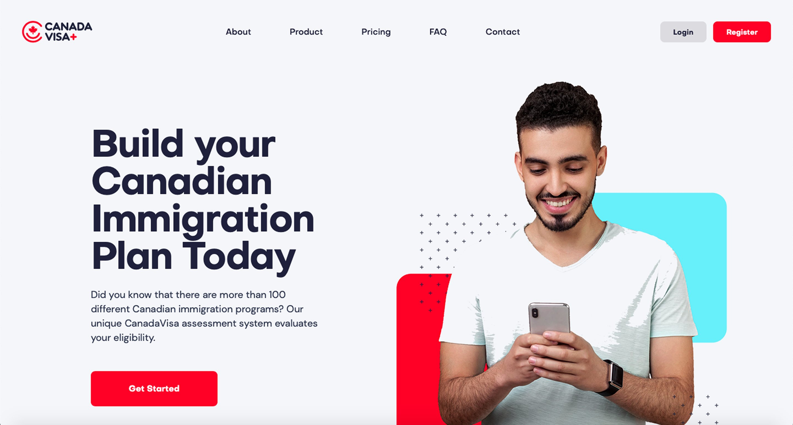
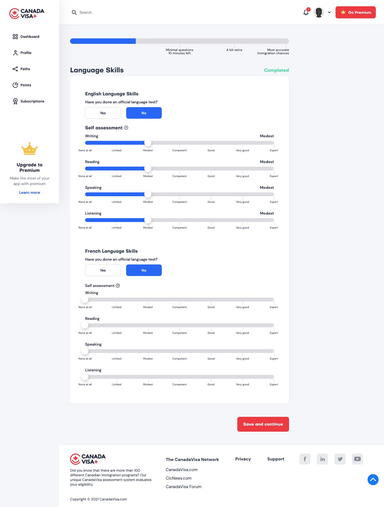
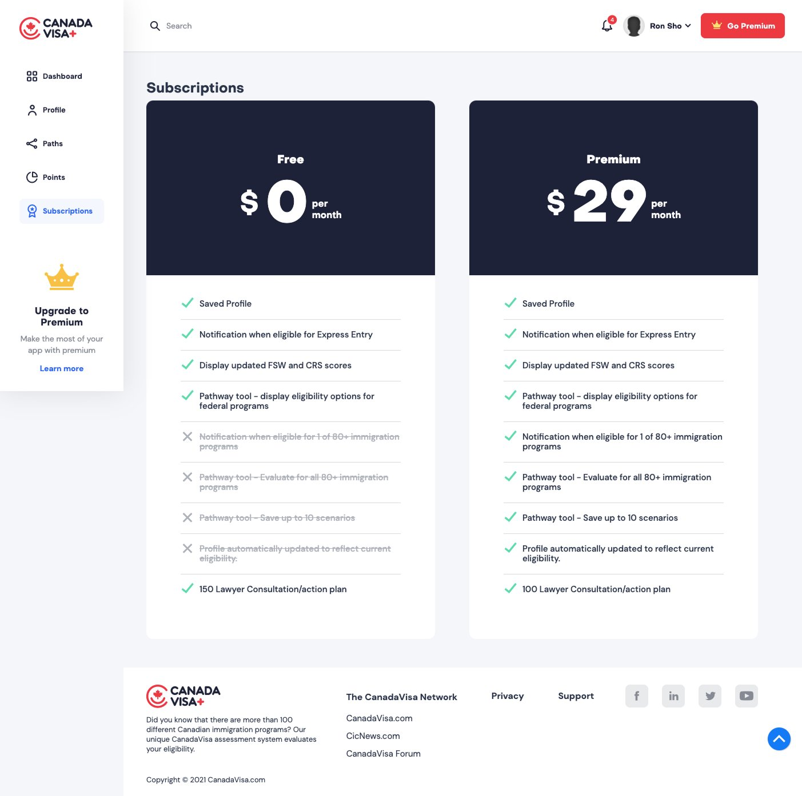
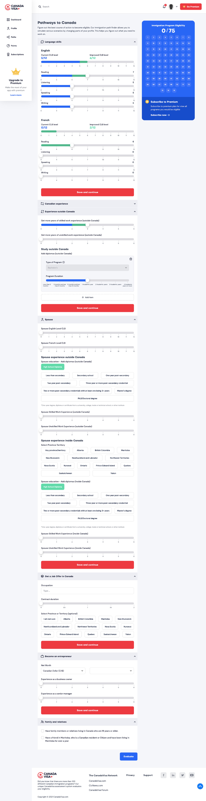

Turning “Not eligible” into “Not yet.”
CanadaVisa.com had 28 million yearly users and a brutal funnel: you were either eligible to immigrate, or you were ignored. I designed a product to serve the majority who fell through.
Bottom line: A 0→1 product that converted ~15% of free users to premium and gave hundreds of thousands of dormant users a path back.

A machine built to serve the eligible only.
CanadaVisa.com is the world's largest Canadian immigration information platform. Its funnel was highly optimized, but binary.
Users completed an eligibility assessment; eligible users became leads for immigration lawyers; everyone else, the majority, hit a dead end and churned.
“We have hundreds of thousands of dormant users who want to immigrate but aren't eligible yet. We're ignoring them. Build something that serves them, and turns them into leads when they become eligible.”
The ask was clear: a freemium self-serve tool to guide ineligible users toward eligibility across 120+ Canadian immigration programs. I led it end-to-end, stakeholder alignment, user research, IA, wireframes and handoff.
The ineligible aren't uninterested. They're stuck.
Research combined quantitative analysis of the existing user database with 10 qualitative interviews, demographics, missing qualification types, even purchasing power by country.
The most common missing qualification was language proficiency, IELTS scores. A single CLB level improvement could unlock dozens of programs.
Most dormant users were educated professionals. The issue wasn't motivation, it was opacity. They didn't know which gap to close first.
The funnel returned pass/fail. A “Not eligible” result gave no path forward and no reason to return. It treated a spectrum as a binary.
“My parents are looking for a husband for me. His eligibility to immigrate is one of the things we're looking for.” Decisions are rarely individual.
“I'd like to understand my education options in Canada.” People googled alongside the tool, they needed IA that could hold the whole journey.
“I trust CanadaVisa because of David Cohen's email and his no-BS approach.” The opportunity was to extend that trust into the product.
User personas
Five user types emerged, each with different blockers, timelines and motivations.
“I'm a working engineer but my IELTS scores are low.”
“I know getting my master's could help me immigrate.”
“I have the means to immigrate but no work experience.”
“I'm almost eligible but not sure what my next step is.”
User journey
Mapping the steps from discovering ineligibility to becoming an active lead revealed where the experience broke, and where we had leverage.
Assessment
The algorithm scores the user across 120 immigration programs.
Score reveal
User sees their CRS/FSW score, where they stand, but not what would change if they acted.
Path Finder (new)
User adjusts sliders, language, education, experience, and sees in real time which programs open up. A “what if” simulator for immigration.
Personalized plan (premium)
A detailed report, recommended programs, specific gaps, partner services (IELTS courses, job boards, legal consults).
Re-engagement → lead conversion
As users improve over time, the system detects when they cross a threshold and surfaces lawyer consultations.
The Path Finder: immigration as a simulation.
The core insight: eligibility isn't binary, it's a multi-variable equation. Instead of showing a score, I designed a tool that let users manipulate variables and see exactly which programs opened up.



Key design decisions
Each grounded in a specific research finding.
Sliders over dropdowns
Immigration variables feel like a questionnaire. Sliders make them feel like dials, inviting exploration. Closer to a game than an application.
Show programs unlocked, not a single score
A CRS number means nothing to most users. “8 programs open” vs “24 programs open” is immediately meaningful. I led with the programs count.
Freemium gate at depth, not entry
Gating too early kills engagement. The free tier delivers genuine value; premium reveals the specific steps and partner services.
Spouse profile as a first-class feature
Research showed immigration decisions are rarely solo. I pushed for spouse eligibility modelling from the start, a use case competitors had missed.
A new product category in immigration tech.
CanadaVisa+ launched as a genuinely novel product, no direct competitor existed at the time. The challenge was making a complex, bureaucratic system feel navigable and empowering for people in high-stakes situations.
What I learned. Designing for emotional, high-stakes decisions means framing that reduces anxiety before it asks for input. The freemium gate works best when the free tier delivers a real “aha”. And cross-functional scope, lawyers, devs, marketing, UI, made the 200+ question data map as important as the wireframes. With more time: usability testing with dormant users before the UI phase.